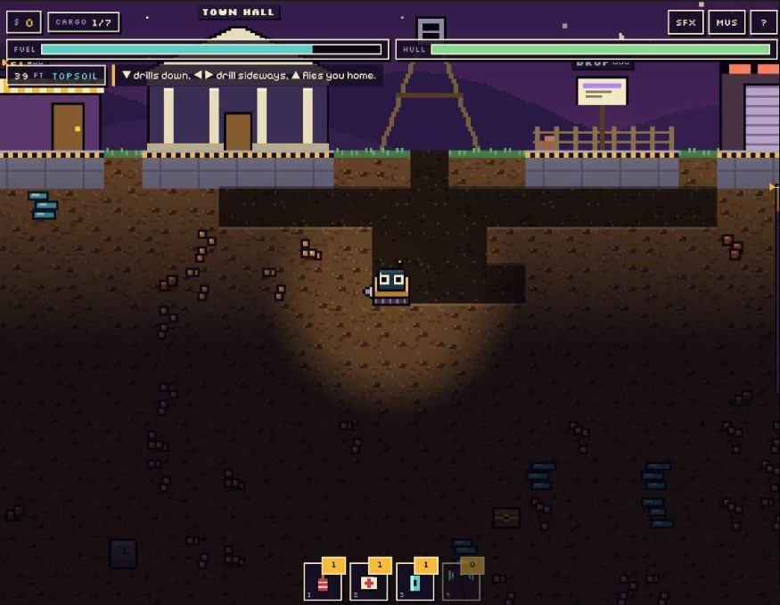
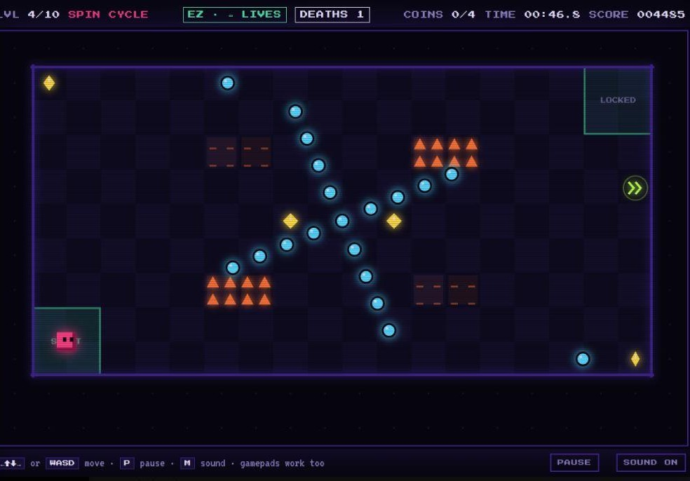

For the hiring team
Where to look
The skills a gameplay and generative AI role asks for, and the part of this portfolio that shows each one.
| Player controllers and real-time systems |
Digby DeepFixed 60-step physics, collision resolved one axis at a time, and drilling timed by rock hardness and drill speed. YOLO SquarePrecision movement on keyboard, gamepad and touch. |
|---|---|
| Economy, progression and balance | Digby DeepBranching upgrades with gem-gated top tiers, shifting market prices, a nine-building town, and contracts with streaks and guild rank. |
| Difficulty and the player journey | YOLO SquareThe same ten levels played two ways: one life for the whole run, or unlimited retries with every death counted. |
| Determinism and debugging | Digby DeepSeeded world generation, and one stats function that recomputes from scratch so upgrades can't stack incorrectly. |
| Guardrails between AI output and the player | ProposalsRules layers that would check generated contracts and levels before players see them. Designed, not yet built. |
Digby Deep
An 8-bit mining game inspired by Motherload. You drive a small drill pod with animated eyes down through six zones, from Topsoil through the Magma Belt and the Abyss to the Core, 4,600 ft down, where you crack open the planet's Heart.

- Runs in
- The browser, from one HTML file of about 150 KB
- Built with
- JavaScript, Canvas 2D, Web Audio
- Assets
- None loaded. Every sprite and sound is generated in code.
- World
- 64 × 376 tiles, six zones, seeded
- Controls
- Arrows or WASD to drive, down to drill, up to fly, 1–4 for gadgets
The core loop
- Dig for ore.
- Fly home before the fuel runs out.
- Sell at the drop-off.
- Upgrade the pod and the town.
- Dig deeper.
What keeps players digging
- Branching pod upgrades. Each part splits into one of two specialties, and the top levels cost gems.
- Modules and gadgets. Extra kit such as the Ore Scanner, with combinations that unlock bonus synergies.
- A town you build. Nine buildings paid for in cash and ore, growing the town from Outpost to Capital.
- Contracts. Several types and rarities, with streak bonuses and a guild rank.
- Reasons to return. Shifting market prices, hidden relics, and a new-planet restart after you win.
How it's built
The world is a grid of numbers
The mine is one flat list where each value is a tile: dirt, rock, gold, gas, lava. It's generated from a seed, so the same seed always rebuilds the same map. Random-walking worms carve the caves, and each zone has its own ore odds.
One state object, one stats function
Everything that gets saved lives in a single object. Instead of nudging stats on every purchase, one function recalculates them all from scratch, which removes a whole class of stacking bugs.
A fixed-step game loop
Physics runs at a fixed 60 steps per second while drawing happens every frame. Collision moves the pod sideways first, then vertically, and pushes it out of any solid tile. Drilling isn't instant: the pod slides into the tile over a time set by rock hardness and drill speed, then the game resolves what was inside.
Sharp pixels, cached tiles
The canvas draws at whole-number zoom so pixels stay crisp, and each tile design is cached after its first draw. Darkness is its own layer, with holes cut for the headlight, lava and sparks.
The pod's eyes are rules
They follow your movement or drill direction, jitter while drilling, and blink on a random timer. They turn to ^ ^ for ore, X X when hurt, and a frown when the hull is low.
Music written as text
Songs are note strings that the code parses and schedules a split second ahead on the audio clock, so the rhythm never drifts. Bass lines and arpeggios are generated from the chord names.
Saving the dug-out world
Progress, including the whole dug-out map, saves to browser storage only while you're in town. Older saves are converted to the newer format.
Menus as page elements
The menus and HUD are regular web page elements layered over the canvas, which keeps text sharp and the game view simple.
YOLO Square
One square. Ten levels. You only live once.
A neon arcade game about precision. You steer a small pink square with big eyes through rooms of dodging dots, timed lasers, rising spikes and drifters that move at random. In each level you collect every coin, then reach the exit. The levels build steadily to a final level called YOLO.

Two modes, two player journeys
One life for the whole run. One hit ends it.
Unlimited lives. Respawn at the start of the level you died on, with every death counted.
Both modes play the same ten levels and keep separate best scores, so a player can learn the rooms on EZ and then take them on in one life.
- Runs in
- The browser
- Controls
- Keyboard, gamepad and touch
- Levels
- 10, hand-built
Features
- Ten hand-built levels, including a spiral, a staircase, a crossroads and a ring.
- Enemies at different speeds, plus random drifters whose eyes show where they're about to go.
- Power-ups: shield, slow-mo and speed boost.
- Dark neon visuals with a chiptune soundtrack that speeds up each level.
- Separate best scores for each mode.
Design noteDrifters move at random, but their eyes show where they're heading next. The randomness stays readable, so a hit feels like the player's mistake rather than bad luck.
Where generative AI fits next
Both games have systems a model could feed, as long as a rules layer checks the output first.
Generated contracts
A model writes contract briefs and the guild master's dialogue, so the board stays fresh on every planet.
Rules layer: every contract must name ore that exists in a zone the player can reach, and pay within the economy's bounds. The recompute-from-scratch stats function makes the reward math easy to check before a contract goes up.
Generated levels with a solvability gate
A model proposes hazard layouts in the style of the ten hand-built rooms.
Rules layer: a solver simulates the hazard timing and rejects any layout without a safe path, then scores difficulty so a new level slots into the curve between existing ones.
Let's talk
I'm looking for a role building gameplay where generative AI makes play better. I'd be glad to walk through any of these systems in detail.
shaness220@gmail.com